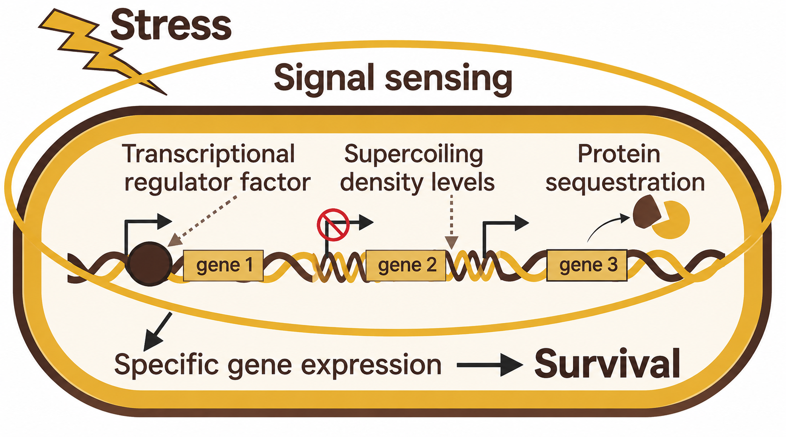

How do microorganisms make decisions under stress?
Microbial cells integrate multiple layers of gene regulation to sense environmental changes and mount appropriate responses. We study how transcription factors, their temporal dynamics, DNA topology, and other regulatory mechanisms interact to control gene expression and microbial adaptation. By combining quantitative experiments with stochastic and deterministic modeling, we aim to uncover these mechanisms and predict how cells respond to changing environments.

Microbial Stress Sensing, Response & Adaptation
How microorganisms detect environmental stress and coordinate
adaptive responses.
Microbial Stress Sensing, Response & Adaptation
How microorganisms detect environmental stress and coordinate adaptive responses.
Microorganisms constantly experience changing environments. To survive, they must sense stress, process information, and reorganize gene expression in ways that preserve cellular function.
We investigate the regulatory mechanisms that allow microbial cells to detect stress and coordinate adaptive responses across multiple molecular pathways and timescales.
Dynamics of Gene Regulatory Networks
Understanding how network architecture and temporal dynamics
shape cellular behavior.
Dynamics of Gene Regulatory Networks
Understanding how network architecture and temporal dynamics shape cellular behavior.
Gene regulatory networks are dynamic systems rather than static wiring diagrams. Their temporal behavior can determine whether a cell adapts, changes phenotype, or loses viability.
We use deterministic and stochastic mathematical models to understand how network architecture, feedback, molecular noise, and timescale separation shape regulatory dynamics.
Predictive & Quantitative Systems Biology
Integrating mathematical models and quantitative experiments
to generate testable predictions.
Predictive & Quantitative Systems Biology
Integrating mathematical models and quantitative experiments to generate testable predictions.
Our goal is to develop models that do more than explain existing observations. We aim to build quantitative frameworks that generate experimentally testable predictions about cellular behavior.
Experimental measurements are used to constrain model parameters, distinguish alternative mechanisms, and iteratively improve our understanding of biological regulation.
Synthetic Biology as a Tool to Understand Regulation
Using engineered perturbations to test regulatory mechanisms
and model predictions.
Synthetic Biology as a Tool to Understand Regulation
Using engineered perturbations to test regulatory mechanisms and model predictions.
Synthetic biology provides a powerful way to perturb regulatory systems in controlled and interpretable ways.
By modifying network architecture, feedback strength, gene dosage, and regulatory interactions, we can directly test mechanistic predictions and uncover the design principles that govern natural biological systems.